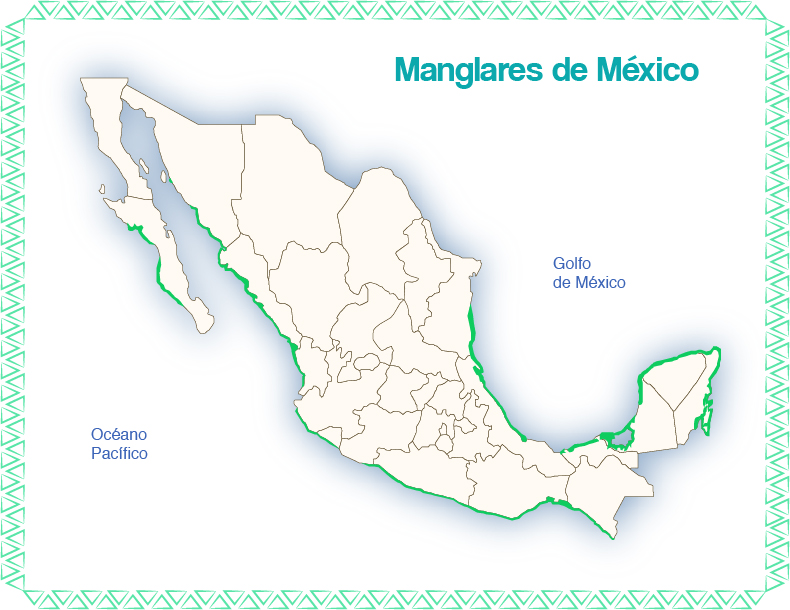
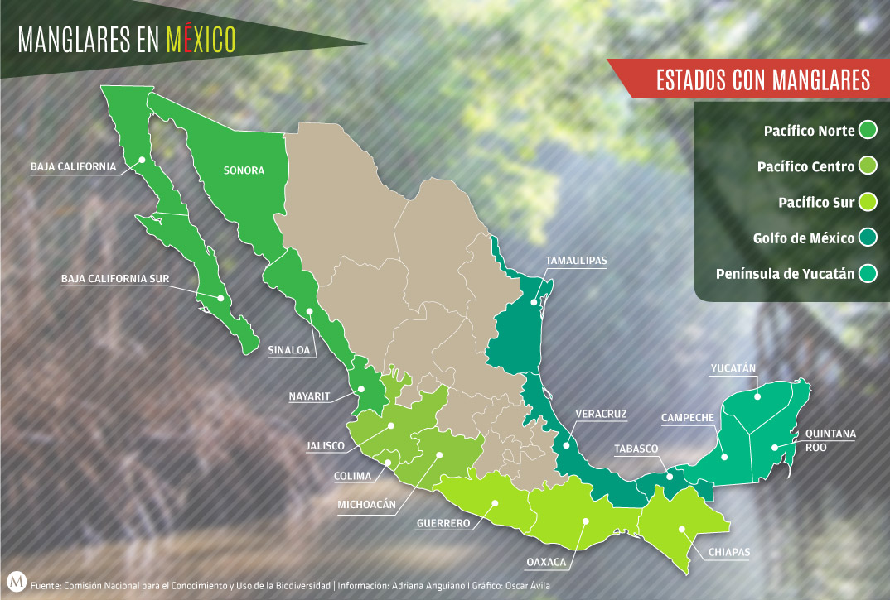
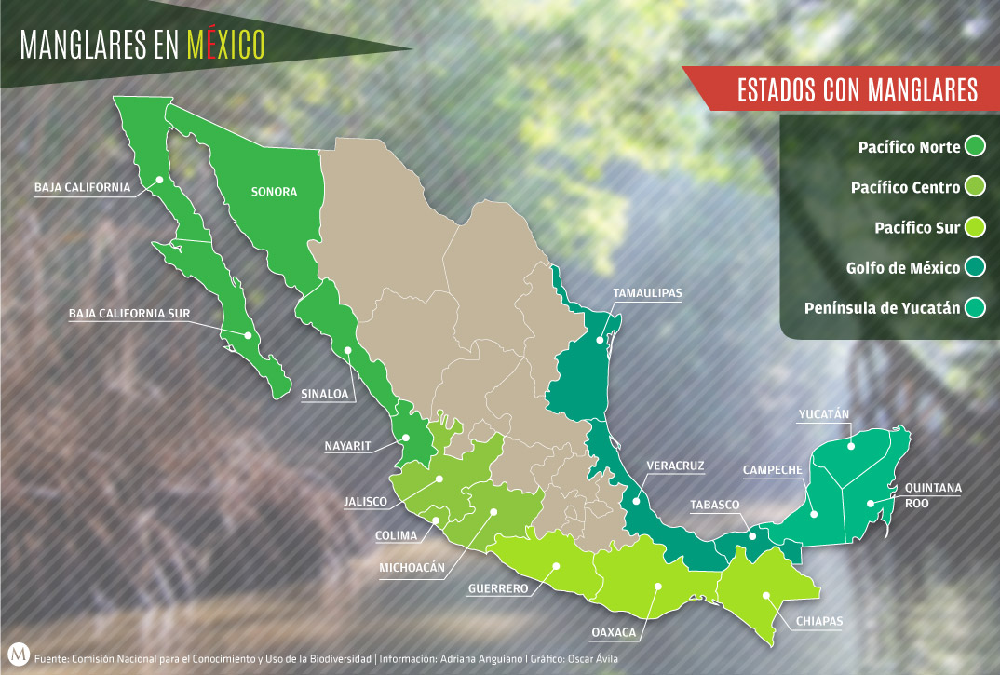

-Caracteristicas abioticas
| Caracteristica | dato |
|---|---|
Altitud |
A nivel del mar de 1 a 30 metros |
Latitud |
Se ubica en regiones tropicales y subtropicales, mayormente en el tropico de cancer y capricornio. De 14 a 28 grados de latitud norte. |
Temperatura |
De 20 a 35 grados, pero puede ser mas altas en areas cercanas al Ecuador. |
Suelo |
Son lodosas,ricas en material organico y salinos debido al agua de mar. |
Precipitacion |
Relativamente altas, con un promedio anual de 1500 a 3000 milimetros. |
Estacionalidad |
Puede tener de lluvias hasta estaciones secas. |
Humedad |
Son muy humedos debido a su proximidad al mar creando un ambiente propicion para el crecimiento de distintas especies. |



-Areas Naturales protegidas de los manglares Mexicanos
| Region | Estado | Manglar protegido |
|---|---|---|
Pacifico Norte |
Baja California |
42 |
Baja California Sur |
25,511 |
|
Sonora |
12,334 |
|
Sinaloa |
76,300 |
|
Nayarit |
66,849 |
|
Pacifico Centro |
Jalisco |
2,338 |
Colima |
3,487 |
|
Michocacan |
1,450 |
|
Pacifico Sur |
Guerrero |
7,730 |
Oaxaca |
19,673 |
|
Chiapas |
49,618 |
Region |
Estado | Manglar protegido |
|---|---|---|
Golfo de mexico |
Tamaulipas |
3,664 |
Veracruz |
42,696 |
|
Tabasco |
49,225 |
|
Peninsula de Yucatan |
Campeche |
200,279 |
Yucatan |
96,873 |
|
Quintana Roo |
247,017 |